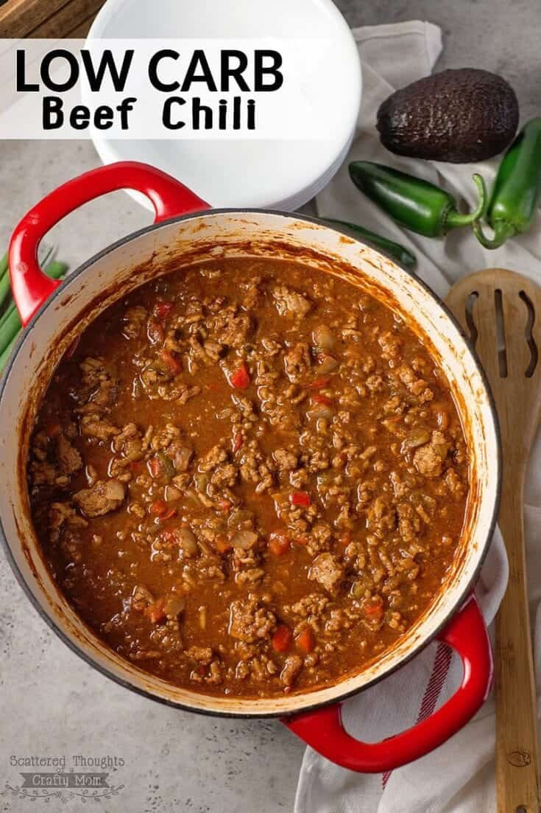

Low Carb No-Bean Chili

Low-carb chili.
Ingredients
- 2 ½ pounds 80% lean ground beef
- 1 medium yellow onion, diced
- 3 cloves garlic, minced
- 2 (15 ounce) cans tomato sauce
- 1 (15 ounce) can fire-roasted diced tomatoes
- 1 (15 ounce) can crushed tomatoes
- ¼ cup Worcestershire sauce
- 1 tablespoon taco seasoning mix
- 1 tablespoon ground cumin
- 1 teaspoon garlic powder
- 1 teaspoon onion powder
- 1 teaspoon dried oregano
- salt and ground black pepper to taste
Steps
- Heat a large skillet over medium-high heat. Cook and stir ground beef, onion, and garlic until meat is browned and crumbly and onion is translucent, 5 to 7 minutes. Drain ground beef in a colander.
- Transfer meat mixture to a slow cooker; add tomatoes sauce, diced tomatoes, crushed tomatoes, jalapenos, Worcestershire, taco seasoning, cumin, garlic powder, onion powder, oregano, salt, and pepper and stir to combine. Cover and cook, adding water as needed to thin out chili, on Low for 8 hours.